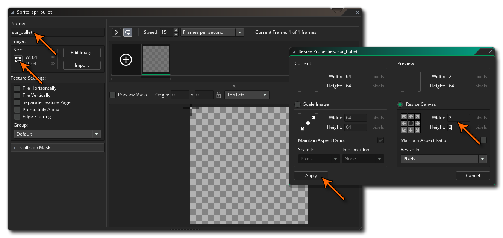
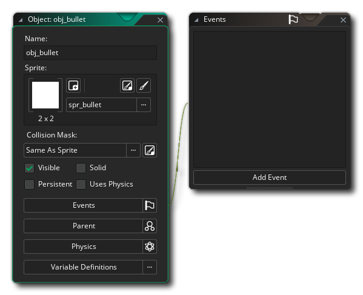
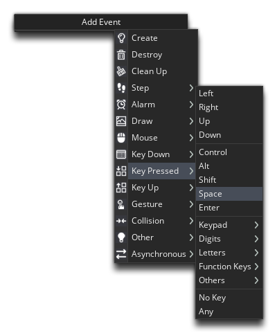
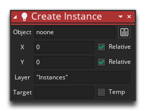
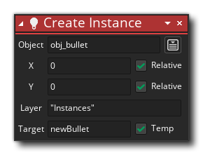
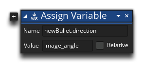
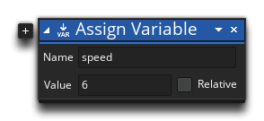
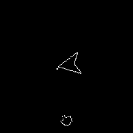

Asteroids can now destroy the player, but we haven't got any mechanism for the player to destroy the asteroids! Let's add that now...
The first thing we need to do is make the bullet sprite, so make a new Sprite Resource, call it "spr_bullet" and set its size to 2x2px:

Now, edit the sprite in the Image Editor and colour it white, so that you get a 2x2px white square. Close the Image Editor, and then set the origin of the sprite to Middle Center and leave the collision mask on its default properties, which are perfectly fine for this sprite.
The next thing to do is make a new object, call it "obj_bullet" and assign it this new sprite that you've just created:

We can go back to the player object "obj_ship" now, and add a new event - the Keyboard Pressed event for the Spacebar:

The Pressed keyboard events will only be triggered once when the key is initially pressed down. If the key is held down, no further Pressed events will be triggered until the key is released and pressed again. We're using this event because we only want to create 1 bullet for every key press. If we just used a Keyboard Down event then we'd be creating a new bullet instance every step the key is held down (so 60 bullets in one second if the key is held down that long). We obviously don't want that and by using the Keyboard Pressed event, we avoid that.
In this event we are going to add the action Create Instance from the Instances section of the toolbox. Add this action no to the Keyboard Pressed - Space event using the shown values:

This action means that every time the player presses the spacebar  , a bullet will be created on the layer named "Instances" at the ship X/Y position with no relative offset. A layer is simply a plane on which we place instances in the room editor, and if you look in the room editor you can see in the top left corner (by default) the list of layers in the room. You can add or remove layers here too, and each layer has a "depth" value associated with where the higher the depth, the "further" from the viewer it is and the lower the depth, the "closer" to the viewer, so that a layer at depth 100 will be drawn under a layer at depth -200.
, a bullet will be created on the layer named "Instances" at the ship X/Y position with no relative offset. A layer is simply a plane on which we place instances in the room editor, and if you look in the room editor you can see in the top left corner (by default) the list of layers in the room. You can add or remove layers here too, and each layer has a "depth" value associated with where the higher the depth, the "further" from the viewer it is and the lower the depth, the "closer" to the viewer, so that a layer at depth 100 will be drawn under a layer at depth -200.
We're not quite finished with that action yet though... When created, the bullet won't be moving and even if it was, it wouldn't know which direction to move in. So, to solve that, we need to tell it the direction to move in using actions.
Let's change the action slightly to store this value and then we'll explain what's going on:

The action Create Instance will return a unique integer value which is the instance ID value for the instance just created. If we store this ID value, we can then use it to set information on the newly created instance. So the action returns this ID value and we store it in a temporary (or local) variable called "newBullet". A temporary local variable is a "use and throw away" variable, that will only exist for the duration of the script or the event that it was declared in. This is useful for data that we don't need to hang around (for more information on variables and variable scope, please see the manual).
We can now use this variable to set the direction of movement for the instance we just created using the Assign Variable action from the Common section of the toolbox. Drag that action in after the previous one and fill out the values as shown:

When we use the ID value of an instance followed by a point "." like this, we are telling GameMaker Studio 2 that the "direction" variable we are setting is in the instance stored in the "newBullet" variable, and not in the instance running the main action block. So, in this way we are setting the bullet direction to match the angle of rotation of the ship sprite.
The final thing we need to do is set the speed of the bullet. Now, you could do this in the player object using Assign Variable and the newBullet.speed value, as we did for the direction, but that's unnecessary as the speed for all bullets is always going to be the same, and generally accessing an instance this way is only used for values that are going to change (like the direction). So, we need to go back to the bullet object "obj_bullet" and add in a Create Event with another Assign Variable action with these values:

All that does is assign a value of 6 (pixels per step) to the bullet instance speed.
You can test the game now, and you should see that every time you press the keyboard spacebar down, a single bullet will be released, and you have to release and press the spacebar again to create more:

Click the "Next" button to continue...